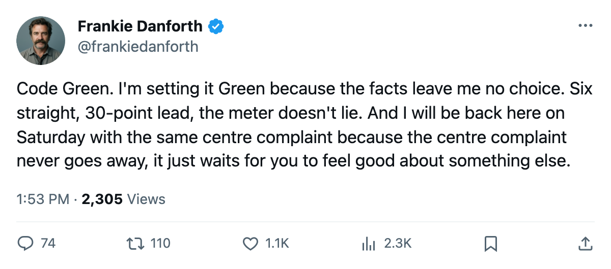

TOR
TORDANFORTH: The meter says green, the centre column says what it always says
Six straight wins, a 30-point lead, 5 days to the deadline, and the one slot that matters is still the one slot that isn't filled.
 Frankie DanforthColumnist · Queen City Telegram
Frankie DanforthColumnist · Queen City Telegram
Code Green

The Panic Meter reads Green. A 6-game winning streak, a 30-point lead in the Northeast, 114 points in the bank with 11 games left. I set it Green because the facts demand it. Then I sit down and read the centre column, and it says the same thing it said in December.
 Mats Sundin92 is 34, carries $8.40M for 5 more years, and plays 20.0 minutes a night.
Mats Sundin92 is 34, carries $8.40M for 5 more years, and plays 20.0 minutes a night.  Brad Richards87 has 63 points in 69 games on a $1.00M salary with 1 year left. Petr Chlup87 is 19.
Brad Richards87 has 63 points in 69 games on a $1.00M salary with 1 year left. Petr Chlup87 is 19.  Jason Spezza73 is 21 and scratched. The slot behind Sundin reads "we hope Richards stays" and "we hope Chlup matures fast enough" and "we hope Spezza's wait ends before his belief does." That is not a plan. That is a prayer with a salary cap attached.
Jason Spezza73 is 21 and scratched. The slot behind Sundin reads "we hope Richards stays" and "we hope Chlup matures fast enough" and "we hope Spezza's wait ends before his belief does." That is not a plan. That is a prayer with a salary cap attached.
Five days until the trade deadline. Five days to decide whether this team gets a centre who can carry 1C minutes in April, or whether it goes into a seven-game series hoping Richards' playoff game travels.
The offence runs four deep:  Marian Gaborik99 has 85 points, Sundin has 79,
Marian Gaborik99 has 85 points, Sundin has 79,  Alexander Mogilny89 has 74,
Alexander Mogilny89 has 74,  Gary Roberts85 has 70. The blue line has
Gary Roberts85 has 70. The blue line has  Bryan McCabe84 at 57 points,
Bryan McCabe84 at 57 points,  Tomas Kaberle85 at 38,
Tomas Kaberle85 at 38,  Barret Jackman86 at 33,
Barret Jackman86 at 33,  Jiri Fischer84 at 33. The Bureau's Development Index has Gaborik at +6, Jackman at +5,
Jiri Fischer84 at 33. The Bureau's Development Index has Gaborik at +6, Jackman at +5,  Rostislav Klesla87 at +5,
Rostislav Klesla87 at +5,  Rick Nash85 at +5, Richards at +4. Ed Belfour is back in net and the goals against read 7 in 6 games.
Rick Nash85 at +5, Richards at +4. Ed Belfour is back in net and the goals against read 7 in 6 games.
And still. The centre slot. The one that wins draws in April. The one that takes the matchup against the other team's best when Sundin is on the bench catching his breath. The one that a man's 5-year, $8.40M contract demands you fill before he turns 35 and the minutes become too much.
I will concede the obvious: you don't blow up a team winning 6 straight with a +20 goal differential. You protect it. But protection and inaction look identical from the press box, and I have been watching that slot go empty since October.
The meter is Green and it should be. I'm just sick of writing the same damn paragraph about the same damn slot.
